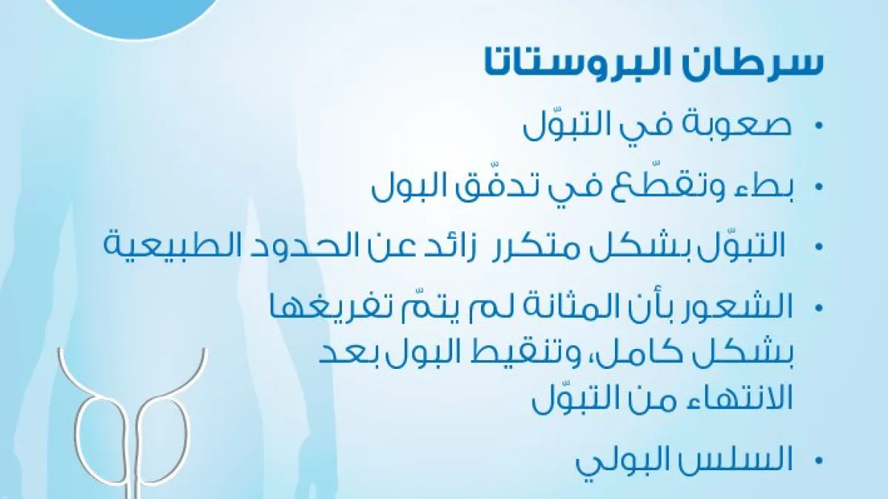

طبيبة مسالك بولية تخلص الرجال من مشاكلهم الجنسية : طبيبة تساعد الرجال على التخلص من التهاب البروستاتا إلى الأبد!
دكتورة ماريا سميث
الدكتورة ماريا سميث، وهي امرأة بارزة في عالم جراحة المسالك البولية، اشتهرت بطرقها المبتكرة في التخلص من إلتهاب البروستاتا و مشاكل الذكورة الأخرى. أدى بحثها الدؤوب عن أساليب جديدة وفهمها العميق لاضطرابات المسالك البولية إلى تطوير تقنيات أدت إلى تحسين نوعية حياة العديد من المصابين بمشاكل البروستات بشكل كبير. نظرًا لإنجازاتها المتميزة، حصلت الدكتورة سميث على جوائز عديدة في مجال المسالك البولية.
ولم تتوقف ماريا عند هذا الحد، بل واصلت عملها العلمي والسريري، مما منحها جائزتين أكثر أهمية - جائزة الجمعية الألمانية لجراحة المسالك البولية والعديد من جوائز الجمعية الأوروبية لجراحة المسالك البولية. تعتبر هذه الجوائز اعترافًا بمساهمتها الكبيرة في مجتمع المسالك البولية الدولي وتقديرًا لعملها من قبل زملائها في جميع أنحاء العالم. الدكتور سميث ليس مجرد طبيب. لقد حصلت على جوائز رائدة في مجال جراحة المسالك البولية، وقد أنقذ عملها حياة العديد من الرجال !
تكشف ماريا سميث لقرائنا أسرار التخلص من مشاكل البروستات وتقدم نصائح عملية للرجال الذين يعانون من آلام البروستاتا
المهمة الرئيسية للدكتورة ماريا سميث هي إنقاذ الرجال من التهاب البروستاتا! منذ بداية مسيرتها الطبية، وضعت ماريا لنفسها هدفًا ليس فقط التخلص من الأعراض، بل البحث عن الأسباب الجذرية لالتهاب البروستاتا. كما تصف الدكتور سميث، الأسباب الجذرية لالتهاب البروستاتا و هي:

إن أسلوبها في التخلص من التهاب البروستاتا فريد من نوعه من حيث أنها تجمع بين الأساليب التقليدية والتقنيات المبتكرة والموقف الشخصي تجاه كل مصاب .
- دكتورة ماريا سميث، أخبرينا ما هي عواقب التهاب البروستاتا و ما هي نتائج إهماله ؟
في 98٪ من الحالات، تكون عواقب التهاب البروستاتا شديدة جدًا. يؤدي التهاب البروستاتا إلى تفاقم نوعية حياة المصاب ويتطلب اهتمامًا خاصًا واتباع نهج متكامل للتخص منه .
مناطق الضرر وخلل الأعضاء لدى الرجال
إن أخطر عواقب التهاب البروستاتا هي تطور التهاب البروستاتا المزمن، وخطر الإصابة بخراجات البروستاتا أو تعفن الدم، خاصة مع العدوى البكتيرية، وتطور المشكلة إلى سرطان البروستاتا.
بالإضافة إلى ذلك، يمكن أن يكون لالتهاب البروستاتا تأثير سلبي على الحالة النفسية للمصاب . مما يسبب التوتر والقلق والاكتئاب. التوتر وفي مرحلة التهاب البروستاتا تؤثر المشكلة على النشاط الجنسي ومن سن الثلاثين تظهر مخاطر الضعف الجنسي و حتى عدم الرغبة في ذلك .
كل هذه العواقب الخطيرة تؤكد أهمية التخلص المبكر من مشاكل البروستات عند ظهور العلامات الأولى لالتهاب البروستاتا، وكذلك الحاجة إلى اهتمام خاص لمنع حدوث مضاعفات خطيرة والحفاظ على صحة الرجل!
يؤدي الالتهاب المطول أولاً إلى الورم الحميد، ثم إلى سرطان البروستاتا (الذي يموت منه، وفقًا للإحصاءات، 38٪ من الرجال).
دكتورة ماريا، لاحظنا أن متوسط عمر مرضاك هو 40-70 سنة. هل من الممكن أن يستمروا في الحفاظ على حياة جنسية نشطة؟
بالطبع، أود أن أقول أنه في هذا العصر من المهم الحفاظ على الصحة العامة. يمكن أن يساهم قلة النشاط الجنسي في تطور العديد من المشاكل الصحية المرتبطة بالعمر وانخفاض نوعية الحياة.
قد يعاني الرجال الذين لا يحافظون على حياة جنسية نشطة من تغيرات في المزاج والتهيج، خاصة مع تقدمهم في السن. في كثير من الأحيان يعترف لي المصابين أنهم لم يمارسوا الجنس منذ عدة سنوات ولا يتخيلون حتى أن هذا قد يؤثر على صحتهم.
ومع ذلك، فإن قلة النشاط الجنسي يمكن أن يكون لها عواقب وخيمة على البروستاتا والجسم ككل. تلعب البروستاتا دوراً هاماً في عملية القذف، وقلة ممارسة الجنس يمكن أن تؤدي إلى تغيرات صحية في هذا العضو الذكري للرجال .
يمكن أن يرتبط التهاب البروستاتا والورم الغدي وحتى سرطان البروستاتا بعدم كفاية النشاط الجنسي. علاوة على ذلك، فإن الامتناع عن ممارسة الجنس على المدى الطويل يمكن أن يؤدي إلى مشاكل مختلفة مثل ضعف الدورة الدموية، ومشاكل النوم، والاضطرابات النفسية.
إظهار التغيرات التي تحدث في الجهاز البولي التناسلي والأعضاء الداخلية الأخرى للرجل عندما يتم التوقف عن النشاط الجنسي
بسبب العمليات الراكدة في الأوعية، يمكن أن تتشكل رواسب الكوليسترول، مما يساهم في تكوين جلطات الدم. وهذا يزيد من خطر الإصابة بنوبة قلبية أو سكتة دماغية..
هل ما زلت غير متأكد من ممارسة الجنس؟ بالإضافة إلى ذلك، يمكن للجنس أن يعزز الاستقرار في العلاقة. لسوء الحظ، فإن العديد من الرجال الذين عانوا من مشاكل في الفاعلية يظلون وحيدين. بينما يمكن للنساء الاستمرار في ممارسة الجنس حتى في السبعينيات والثمانينيات من العمر، فإن هذا مهم أيضًا لصحتهن. القاعدة العامة هي أنه كلما طالت مدة العلاقة الجنسية بين الزوجين، طالت مدة علاقتهم .
ما هو النهج الفريد الذي يمك ان يستخدمه الرجال للتخلص من التهاب البروستاتا؟
لقد كنت أساعد الرجال على الوقوف على أقدامهم لمدة 25 عامًا، وذلك باستخدام منتج واحد لا مثيل له و هو حصل على العديد من الجوائز العالمية بسبب قوة مفعوله . هذا منتج طبيعي فريد يعتمد على مزيج من الأعشاب والنباتات المختارة بعناية لخصائصها الممتازة وسلامتها. يعتمد هذا المنتج الذي يساعد على التخلص من التهاب البروستاتا على مبادئ الطب التقليدي، الذي يؤكد على الطرق الطبيعية لزيادة قوة الرجال الجنسية و التخلص من مشاكل البروستات . هذا المنتج هو عبارة عن مكمل غذائي يسمى RHINOXX ، فهو يساعد على تحسين الدورة الدموية وتقليل الالتهاب والحفاظ على وظيفة البروستاتا الصحية دون آثار جانبية ولا تفاعلات حساسية!

و ما هي المدة الأفضل لإستخدام المكمل الغذائي RHINOXX . و هل هناك أي أعراض جانبية ؟
في الواقع، [RHINOXX] يعمل بفعالية كبيرة. والدليل على ذلك أن مواعيدي يتم حجزها قبل عدة أسابيع، ويأتي المصابين من بلدان أخرى، وهذا يوضح الكثير عن لماذا دائماً أنصح جميع مرضاي بهذا المنتج الرائع ! . ومن المثير للاهتمام أنه ليس من الضروري أن أبذل أي جهد خاص - أنصح فقط بهذا المكمل الغذائي [RHINOXX]، والذي يمكن شراؤه عن طريق تقديم طلب رسمي. وهو متاح حاليًا أيضًا في العديد من الدول و بتخفيضات كبيرة ! .
هذا المكمل الغذائي هو آلية مبتكرة للعمل على الجهاز البولي التناسلي الذكري. وبالحديث عن فعالية [RHINOXX ]، أود أن أشارككم نتائج هذا المنتج على جميع من نصحتهم به و لقد اجريت هذه الدراسة في الفترة ما بين 2022-2024. قام أكثر من 33000 رجل فوق سن الأربعين بالتخلص من مشاكل الضعف الجنسي و مشاكل ألام البروستات . لم يعد لديهم مشاكل بالإنتصاب و حافظوا على علاقاتهم حميمة لعدة سنوات.
نتائج إستخدام المكمل الغذائي RHINOXX :
-
96%
حقق 96% من المشاركين زيادة كاملة للقوة الجنسبة ، مما سمح لهم بممارسة الجنس أكثر من مرة في الأسبوع.
-
94%
لاحظ 94% من المصابين زيادة في مستويات هرمون التستوستيرون.
-
98%
لاحظ 98٪ من المصابين عودة التبول إلى طبيعته.
-
90%
لاحظ 90% من المستخدمين تحسنًا في صحتهم العامة.
-
100%
ولم يلاحظ أي آثار جانبية لديهم جميعا بنسبة 100٪ .
كما سألنا كل مستخدم استخدم هذا المكمل الغذائي سؤالاً واحدًا: "هل ساعدك [RHINOXX ] على التخلص من التهاب البروستاتا؟"
نتائج الاستطلاع:
شارك العديد من المستخدمين قصصهم. سأخبرك بإذنهم وتعليقهم:
محمود 58 سنة
سبب إستخدامه للمنتج و الأعراض:التهاب البروستاتا، الأرق، ضعف الانتصاب، انخفاض الرغبة الجنسية. عدم ممارسة الجنس لمدة 5 سنوات.
أكمل دورة واحدة من المكمل الغذائي [RHINOXX].
بعد إستخدام دورة واحدة من “[RHINOXX]”: اختفى الانزعاج ومعه الاكتئاب! بدأت أذهب إلى المرحاض بشكل أقل كثيرًا. أظهرت صور الموجات فوق الصوتية انخفاضًا في حجم البروستاتا إلى الحجم الطبيعي.
"يمكن أن يؤثر التهاب البروستاتا على مستويات الهرمونات مثل هرمون التستوستيرون، مما قد يؤدي إلى ضعف الانتصاب، وبالتالي ضعف الانتصاب بدوره يمكن أن يسبب الأرق والقلق".
مصطفى 56 سنة
سبب إستخدامه للمنتج و الأعراض: ورم البروستاتا الحميد، ألام أثناء التبول . العار أمام زوجتك الشابة لعدم حصولها الجنس بشكل منتظم وعالي الجودة، نقص الطاقة، تراجع قوته الجنسية .
أكمل دورة واحدة من المكمل الغذائي [RHINOXX].
بعد إستخدام دورة واحدة من “[RHINOXX]”: اختفى الورم الحميد في البروستاتا. أصبح واثقا من نفسه كرجل؛ استقرار الهرمونات، وزيادة القدرة على التحمل.
"يمكن أن يؤدي التهاب البروستاتا المزمن إلى مزيد من تطور الورم الحميد في البروستاتا بسبب تفاعل التهابي طويل الأمد في البروستاتا. ,و عند إهمال الرجال التخلص من التهاب البروستات تظهر أعراض مثل: كثرة التبول، وألم عند التبول، وصعوبة في بدء التبول، وضعف تدفق البول أو متقطع والشعور بمثانة غير مفرغة - تمر دون أن تترك أي أثر.
أيمن
سبب إستخدامه للمنتج و الأعراض: التهاب البروستاتا المزمن و الصلع، ظهور ثنيات دهنية وزيادة الوزن، التعب، ضعف الإنتصاب .
أكمل دورة واحدة من المكمل الغذائي [RHINOXX].
بعد إستخدام دورة واحدة من “[RHINOXX]”: تم التخلص من التهاب البروستاتا، و عاد شعره للنمو مرة اخرى ، وبدأ شعر جديد في النمو، وعاد الجسم إلى طبيعته، وخسر 5-7 كجم، وظهرت الطاقة، وأصبح العضو الذكؤي لديه قويًا مثل الحجر.
"التهاب البروستاتا، وهو مشكلة التهابية في البروستاتا، يمكن أن يسبب الألم وعدم الراحة في كيس الصفن و في العضو الذكري . وهذا يمكن أن يؤدي إلى التوتر والقلق لدى الرجل، والذي بدوره يمكن أن يؤثر على الانتصاب ويؤدي إلى ضعف الإنتصاب .
- أخبرنا، هل لـ "[RHINOXX ]" أي أثار جانبية . ربما كنت قد واجهت شيئا في الممارسة العملية؟
- [RHINOXX] منتج قوي، مجمّع فقط من مكونات طبيعية لترميم البروستاتا، دون استخدام أي منشطات إضافية. وهو مضاد للحساسية وليس له أي آثار جانبية. بسبب المكونات النشطة، يتم تثبيت الانتصاب الطبيعي وتوحيده. سأذكر بعضًا من مكوناته الأن :
| الجينسينج الاحمر | أن الجينسينج وخصوصاً الأحمر يساهم في زيادة النشوة الجنسية لدى الرجال، كما يساهم في التخلص من المشاكل المتعلقة بالجنس كالضعف و سرعة القذف و مشاكل الخصوبة |
| نبات القراص | يساعد تناول مستخلص نبات القراص بانتظام على حماية الرجال من العديد من المشكلات الجنسية التي قد يتعرض لها مع التقدم في العمر، مثل: مشكلة الضعف الجنسي . |
| الماكا | تستخدم الماكا بشكل واسع خاصة لدى الرجال لزيادة الخصوبه، و التخلص من العقم لدى الرجال |
| الزنجبيل | يساعد الزنجبيل في تحسين مستويات الخصوبة لدى الرجال، وذلك لأنه يمكن أن يزيد من إنتاج مستويات هرمون التستوستيرون في الجسم، وذلك عن طريق تعزيز تدفق الدم، وتقليل الإجهاد التأكسدي، وزيادة مستويات الهرمون اللوتيني الذي يشارك في انتاج التستوستيرون |
| تونكة علي | يؤدي إلى تحفيز الإثارة الجنسية، وتحسين ضعف الانتصاب لدى الرجال، كما اتضح أنه يحسن حركة الحيوانات المنوية وتركيزها، مما يزيد من خصوبة الذكور. |
[RHINOXX] هو أفضل مكمل غذائي يمكن أن نتوصل إليه للتخلص من مشاكل و إلتهاب البروستاتا وتحسين فعاليتها و زيادة القوة الجنسية للرجال . على عكس العديد من الوسائل الأخرى، فهو الأكثر عملية وفعالية. المكمل الغذائي له تأثير واسع النطاق على الجسم الذكري. لقد ثبت أن استخدام المكمل الغذائي يحسن من صحة الرجل بالفعل. لا تتحسن وظائف غدة البروستاتا فحسب، بل يزداد حجم العضو الذكري أيضًا ويزداد النشاط الجنسي.
تمت إضافته مؤخراً :كما تعلمنا، يتمتع جميع المقيمين في الجزائر الآن بفرصة ممتازة للحصول على المكمل الغذائي بسعر مناسب. تقوم الشركة المصنعة الرسمية بإجراء عرض ترويجي المكمل الغذائي [RHINOXX ] وهناك فرصة للحصول على المنتج بتخفيض 65% ! . العرض ساري حتى 03.04.2024 ضمناً! اكتب إسمك و رقم هاتفك في النموذج الرسمي للطلب بالأسفل وتخلص من مشاكل البروستاتا إلى الأبد و احصل على المنتج بتوصيل حتى باب المنزل و لا تنسى ان الدفع عند الإستلام . .
عند شرائك دورة RHINOXX
باقي على نهاية التخفيض :

 41
رد
مشاركة
41
رد
مشاركة